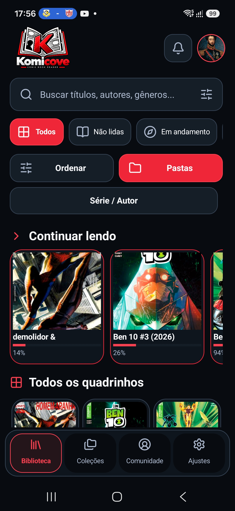

Windows
Windows installer · No Python required
0 downloads
Download Windows installer Download portable versionTHE COMIC READER, REIMAGINED
Keep your comics together, continue where you left off, and read local stories your way on desktop or Android.
01 / CHOOSE YOUR EDITION
One home for your comics, on desktop and mobile. Browse official releases for available packages and installation instructions.
Windows installer · No Python required
0 downloads
Download Windows installer Download portable versionPortable .tar.gz or Flatpak · x86_64
0 downloads
Download .tar.gz Download Flatpak See installation detailsAndroid 8+ · Universal APK
0 downloads
Download APK 0.2.1.1 See installation details02 / INSIDE KOMICOVE
Library, reader and watched folders: spaces designed around your collection.
A short look at the library, watched folders and reader in the real desktop app.
See folders, your library and guided reading on Android.
Take a closer look at each screen

Real screenshots of the current Komicove interface on desktop and Android.
03 / BUILT FOR READING
From the first issue to the latest chapter, everything that matters is within reach.
YOUR COLLECTION TAKES CENTER STAGE
Covers, search, favorites, and progress. Find that issue and pick up exactly where you left off.
Collections to organize your comics and keep your next reads close at hand.
Zoom, thumbnails, and bookmarks to explore every panel without losing your place.
Double-page spreads, manga mode, and vertical reading. Choose how the story unfolds.
Themes and customization to make your reading space more comfortable.
Export and restore your reading data with built-in backups.
05 / OPEN YOUR COLLECTION
On desktop, some formats use your system’s 7-Zip. Android has built-in support. Password-protected files are not supported.
Native support.
READY TO READComics with one image per page, with experimental support.
EXPERIMENTALSupport included in the reader package.
INCLUDEDOn Windows and portable Linux, these require a compatible tool such as 7-Zip.
EXTERNAL TOOLOn desktop, these may need a separate 7-Zip installation.
7-ZIP REQUIREDLINUX 0.2.1.1 · X86_64
Choose the portable .tar.gz (glibc 2.41 or newer) or the experimental Flatpak (Freedesktop 25.08 runtime). Both 0.2.1.1 packages are x86_64 and include the local guided-reading detector.
Validated for this release on:
Available in the 0.2.1.1 Release: Komicove-Linux-0.2.1.1-x86_64.tar.gz and Komicove-Linux-0.2.1.1-x86_64.flatpak.
Download Linux .tar.gz ↓ANDROID 0.2.1.1 · ANDROID 8+
Your library and local reading on your phone, with improved guided reading and PC sync. The universal APK supports ARM64, 32-bit ARM, x86 and x86_64.
Use the button below to download Komicove 0.2.1.1 from the official GitHub Release.
If Android asks, allow your browser or file manager to install this APK.
Open the downloaded file. Keep the existing app installed so your data and compatible signature are preserved.

04 / BEYOND YOUR BOOKSHELF
Discover works, share authorized creations, and track your submissions without leaving the app.
Meet the project ↗Explore the catalog and submit your own or authorized works for review.
View your submissions and track downloads in one place.
Manage your account and keep up with notifications.
KOMICOVE 0.2.1.1 · WINDOWS · LINUX · ANDROID
Version 0.2.1.1 adds manual and system brightness modes, remembers your choice and improves the Android preview.
Read all changes ↗Use the level saved in Komicove or let the reader follow your device brightness.
The selected mode and manual level are restored when you open the app again.
Canceling a preview now restores the brightness setting you had already saved.
NEXT CHAPTERS
A look at the areas guiding the next improvements. Plans may evolve as the project grows.
Refine guided reading, fullscreen behavior and navigation across desktop and Android.
Keep progress and favorites consistent across devices with clearer status and recovery.
Make authorized publications, updates and discovery easier to follow inside Komicove.
INDEPENDENT BY NATURE
Komicove is an independent, open-source project. Found a bug, have an idea or want to contribute? You can be part of the next chapter.
AN INDEPENDENT PROJECT / 03
Komicove is free and open source. If it has earned a place in your reading routine, an optional contribution helps us keep improving it.
Known annual cost: komicove.online domain, R$ 7.08/year.
BEFORE THE FIRST PAGE
Not when using the Windows installer, Linux packages, or Android APK.
Not for local reading. You can use guest mode to open and organize your own files.
Reading local files works without a server. Community and synchronization need internet access and use the Komicove server, already configured in the app.
On Windows and portable Linux, some formats require a compatible tool such as 7-Zip. Android does not need a separate 7-Zip installation. Linux Flatpak may have limitations with these formats.
Use GitHub Issues. Include your version, steps to reproduce the issue, and a screenshot if possible. Never share passwords or tokens.
KOMICOVE 0.2.1.1 · WINDOWS · LINUX · ANDROID